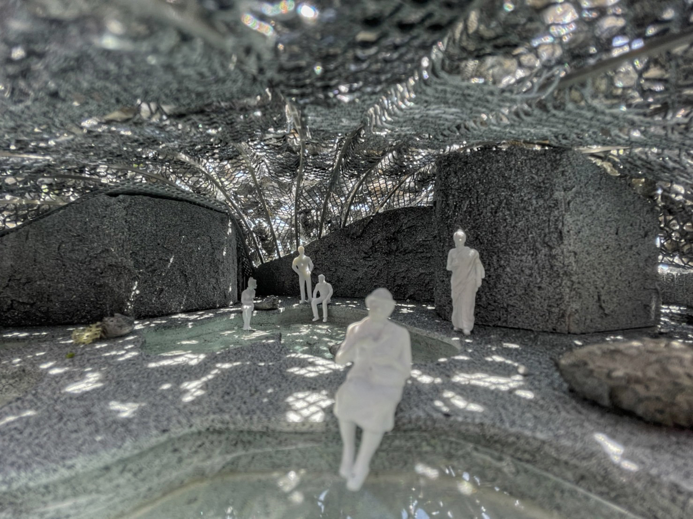
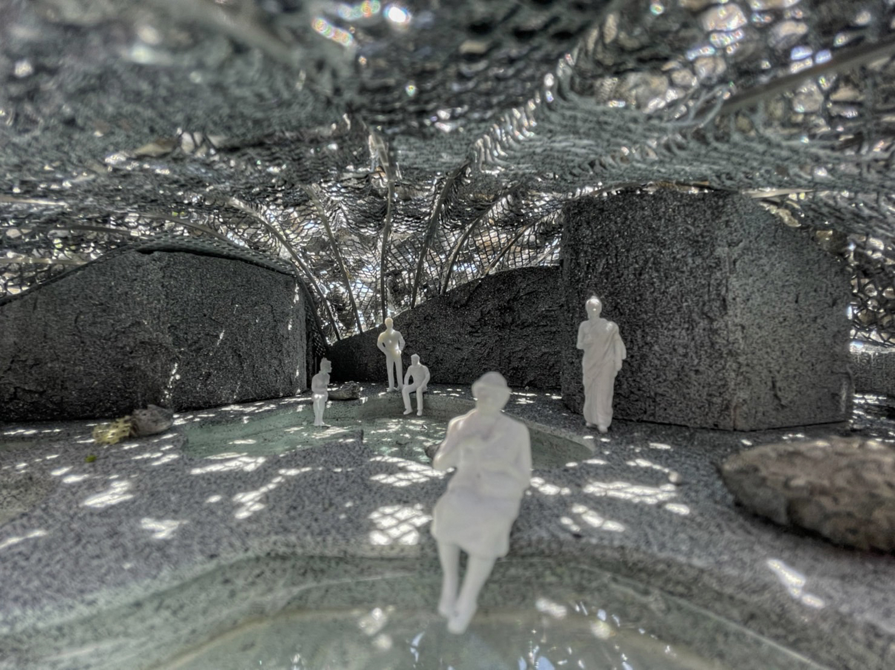

Rocky Onsen
Location: Nagasaki, Japan
Program: Hospitality & Wellness
Year: 2023
Team: John Jiang
Rocky Onsen in Nagasaki reimagines the traditional Japanese hot spring experience through contemporary architectural expression. Carved into the coastal cliffs, the project creates a series of cascading pools and private bathing pavilions that offer dramatic views of the East China Sea while maintaining the intimate connection to nature that is central to onsen culture.
The design carefully balances the raw power of the site's geology with refined architectural interventions. Natural rock formations are preserved and integrated into the spatial sequence, while precisely detailed structures of wood, glass, and stone create sheltered spaces that frame both the seascape and the rugged cliff face.
The project includes both public and private bathing areas, a spa facility, guest rooms, and contemplative spaces that encourage meditation and relaxation. The architecture emphasizes the therapeutic qualities of the hot springs while creating a contemporary interpretation of traditional Japanese bathing culture that resonates with both local and international guests.


 
